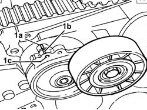
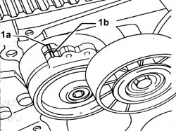
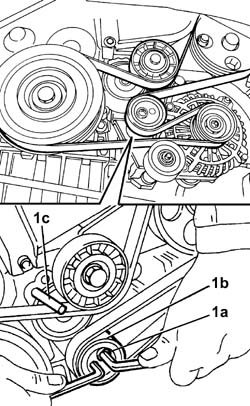
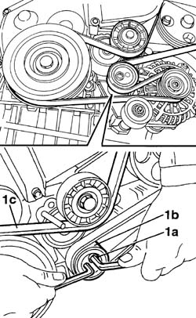
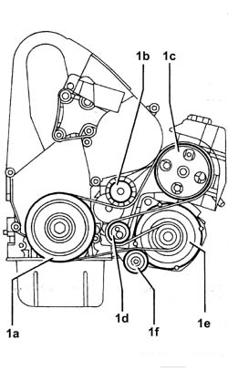
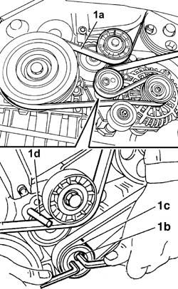
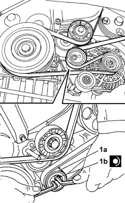

1092G10 SINGLE ENGINE BELT R R
- Path
- Procedures > 10 ENGINE UNIT > 1092 VARIOUS ENGINE COMPONENT CONTROLS > 1092G SINGLE DRIVE BELT FOR VARIOUS ENGINE COMPONENTS > 1092G10 SINGLE ENGINE BELT R R
- Kind
- repair procedure (removal / refitting; the operation number is the code)
- Applies to
- engines: 2.0 JTD 8V; all production periods
- Interactive page
- https://sloeber94.github.io/elrnDB-fDct/en/#/244000993
Applies to: engines: 2.0 JTD 8V; all production periods
 Removing
Removing
 Refitting
Refitting- Position the vehicle on the lift.
Op. 7055B54 UNDER-ENGINE GUARD - R R
Op. 4450B04 RIGHT FRONT WHEEL R R
1. The single belt tensioner is positioned as illustrated in the diagram when the belt is new, in other words when the fixed reference (1a) and the moving reference (1b) are aligned and it is possible to insert a pin in the opening (1c).

Applies to: engines: 2.0 JTD 8V; all production periods
1. The single belt tensioner is positioned as illustrated in the diagram when the belt is worn, in other words when the fixed reference (1a) and the moving reference (1b) are aligned on the second moving reference.

Applies to: engines: 2.0 JTD 8V; all production periods
1. Loosen the bolt (1a) then, using a spanner with a ¼" socket, act on the tensioner (1b) until it is possible to introduct a 4 mm diameter pin (1c) in the reference opening.

Applies to: engines: 2.0 JTD 8V; all production periods
1. Leave the tensioner (1b) and tighten the bolt (1a) temporarily, then remove the single drive belt (1c).

Applies to: engines: 2.0 JTD 8V; all production periods
Refitting
Removing1. Fit the single drive belt following the order illustrated; (1a) crankshaft pulley, (1b) tensioner with wear indicator, (1c) power assisted steering pump, (1d) tensioner with tension adjustment, (1e) alternator, (1f) idler.

Applies to: engines: 2.0 JTD 8V; all production periods
1. Fit the accessories drive belt (1a), loosen the bolt (1b) then, using a spanner with a ¼" socket, act on the tensioner (1c) until it is possible to introduce a 4 mm diameter pin (1d) in the reference opening.

Applies to: engines: 2.0 JTD 8V; all production periods
1. Leave the tensioner (1a) and tighten the bolt (1b) to the recommended torque.
 | Value - daNm | Fastening | Component | Ø |
|---|---|---|---|---|
1b | 4,30 | Bolt | VARIOUS S D BELT CAM TENSIONER | - |
- Remove the 4 mm diameter pin.

Applies to: engines: 2.0 JTD 8V; all production periods
Op. 4450B04 RIGHT FRONT WHEEL R R
Op. 7055B54 UNDER-ENGINE GUARD - R R
- Remove the vehicle from the lift.
Topics linked from this page (2)
Topics that link to this page (24)
- 1008A46 CAM SHAFT LEFT RIGID MOUNT - R R
- 1016C10 SINGLE CYLINDER HEAD, REMOVED - OVERHAUL
- 1020D14 FRONT CRANK SHAFT OIL SEAL COVER - R + R AND REPLACE SEALS FOR VERSIONS WITH OIL PUMP ON CRANK SHAFT, TIMING SIDE
- 1020D18 FRONT CRANK SHAFT COVER OIL SEAL - REPLACE
- 1028H10 PISTON WITH CONNECTING ROD - R R
- 1032B10 TOOTHED TIMING BELT - R + R FOR TIMING ADJUSTMENT OR REPLACEMENT
- 1032B46 TOOTHED DRIVE PULLEY - R + R
- 1032B52 TOOTHED DRIVEN PULLEY (ONE) - R + R
- 1032C18 MOBILE TIMING SYSTEM TENSIONER - R + R FOR 24 VALVE ENGINES
- 1032C32 FIXED TIMING SYSTEM TENSIONER (ONE) R + R
- 1032D12 TIMING SYSTEM PROTECTIVE COVER(S) - R + R
- 1036B10 OVERHEAD CAMSHAFT - R R ON VEHICLE
- 1036B50 FLYWHEEL ON CAMSHAFT - R.R.
- 1060E10 PRESSURE PUMP - R R
- 1060E30 PRESSURE PUMP PULLEY - R R
- 1060E40 SUPPLEMENTARY PRESSURE PUMP - R R
- 1084B10 ENGINE OIL PUMP - R + R WITH CRANKCASE SUMP REMOVED
- 1084B12 ENGINE OIL PUMP - R+R
- 1088C10 WATER PUMP - R + R
- 1092A10 CRANKSHAFT SERVICES PULLEY - R.R.
- 1092G14 ENGINE COMPONENT SINGLE BELT MOBILE TENSIONER - R + R
- 1092G20 ENGINE COMPONENT SINGLE BELT FIXED TENSIONER - ONE - R + R
- 4130B20 POWER STEERING PUMP R R
- 5530A10 ALTERNATOR - R+R